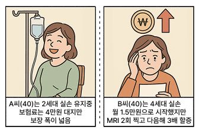

실손보험 이란?
실손의료보험은 병원비를 실제로 쓴 만큼 보장받는 기본적인 건강보험입니다.
맘플랜 회원은 실손 보험 가입 시
보상청구 대행 혜택이 제공됩니다.
자녀 양육 시 법률상담이 필요한
여러 상황들
-
입원하거나 수술받을 때 드는 큰 병원비, 실손보험이 90%까지 돌려드립니다. 몇백만원 나올 수술비도 부담 없어요.
-
건강보험으로는 부족한 비급여 진료비(도수치료, 주사, MRI 등)도 실손보험 가입 시 보장해드립니다.
-
감기·장염 같은 통원치료도 청구 가능해 가성비 높은 보험입니다.
-
우리나라 국민 10명 중 7명이 가입한 필수 보험입니다. 이제 실손보험 없이는 안심할 수 없는 시대입니다.
-
나이 들수록 언제 어떤 병이 올지 모릅니다. 암이나 뇌졸중 같은 큰 병으로 수천만원 들어도 실손보험이 지켜드립니다.
실손보험 왜 비교해야할까요?
-
세대별로 보장 차이가 있어요!
1~4대 실손 보험은 보장 항목과 자기 부담금이 다릅니다. 비교해보고 나에게 유리한 보험을 선택하세요.
-
같은 보장, 다른 보험료를 낼 수 있어요.
같은 연령이라도 가입시기, 보험사에 따라 월 보험료가 2~3배 차이가 날 수 있습니다.
-
비급여 보장, 들어있는지 꼭 확인하세요.
4세대 실손은 비급여 치료를 별도 특약으로 판매하고 있어요. 이게 빠지면 정작 필요할 때 보장이 어렵습니다.
-
할증 조건이 보험마다 정말 달라요.
4세대 실손은 MRI나 물리치료를 많이 받으면 갱신 때 보험료가 최대 3배까지 오를 수 있어요. 병원을 자주 다니신다면 갱신 때마다 부담이 커질 수 있습니다.
-
갱신 후 오르는 보험료, 미리 확인하세요.
갱신할 때마다 보험료가 얼마나 오르는지 회사마다 다르기 때문에, 미리 확인이 필요합니다.
실손보험은 다 똑같지 않습니다!
건강 상태, 병원 이용 습관, 연령 등을 고려해보장·보험료·갱신 조건을 꼼꼼히 비교해야 손해 없이 가입할 수 있습니다.

지역 파트너 손해사정사가 연락드립니다.